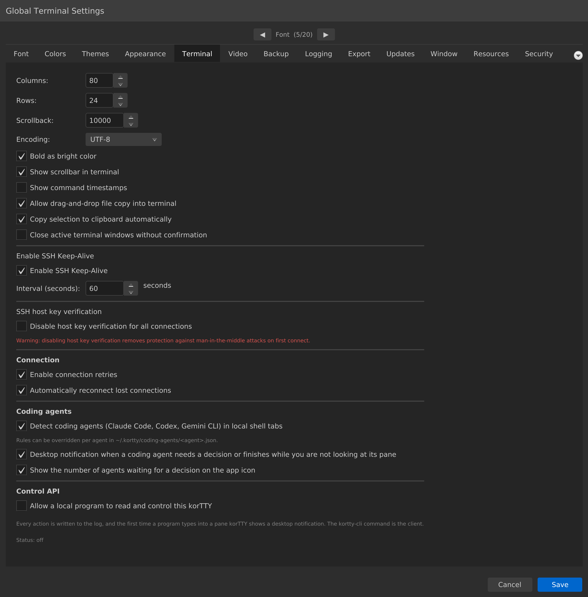

Terminal¶
Konfigurieren Sie die Anzeige- und Verhaltenseinstellungen des Terminals, einschließlich Abmessungen, Scrollback, Zeichenkodierung und SSH-Verbindungsverwaltung. Öffnen über Konfiguration → Globale Einstellungen → Terminal; in ~/.kortty/global-settings.xml gespeichert.

| Einstellung | Typ | Werte | Standard | Gespeichert als |
|---|---|---|---|---|
| Spalten: | Nummer | 40–500 | 80 | terminalColumns |
| Zeilen: | Nummer | 10–200 | 24 | terminalRows |
| Scrollback: | Nummer | 100–100.000 | 10.000 | scrollbackLines |
| Kodierung: | Dropdown | UTF-8, ISO-8859-1, ISO-8859-15, Windows-1252 | UTF-8 | encoding |
| Fett wie helle Farbe | umschalten | — | Ein | boldAsBright |
| Bildlaufleiste im Terminal anzeigen | umschalten | – | Ein | showTerminalScrollbar |
| Befehlszeitstempel anzeigen | umschalten | – | Aus | commandTimestampsEnabled |
| Dateikopie per Drag-and-Drop in das Terminal zulassen | umschalten | – | Ein | terminalDragDropEnabled |
| Auswahl automatisch in die Zwischenablage kopieren | umschalten | – | Ein | terminalCopyOnSelectEnabled |
| Aktive Terminalfenster ohne Bestätigung schließen | umschalten | – | Aus | closeActiveTerminalWindowsWithoutConfirmation |
| SSH Keep-Alive aktivieren | umschalten | – | Ein | sshKeepAliveEnabled |
| Intervall (Sekunden): | Nummer | 5–600 | 60 | sshKeepAliveInterval |
| Verbindungswiederholungen aktivieren | umschalten | – | Ein | connectionRetriesEnabled |
| Verlorene Verbindungen automatisch wiederherstellen | umschalten | – | Ein | autoReconnectEnabled |
| Hostschlüsselüberprüfung für alle Verbindungen deaktivieren | umschalten | – | Aus | hostKeyCheckDisabledForAllConnections |
| Coding-Agents (Claude Code, Codex, Gemini CLI) in lokalen Shell-Tabs erkennen | umschalten | – | Ein | codingAgentDetectionEnabled |
| Desktop-Benachrichtigung, wenn ein Coding-Agent eine Entscheidung braucht oder fertig wird, während Sie seinen Bereich nicht ansehen | umschalten | – | Ein | codingAgentNotificationsEnabled |
| Anzahl der auf eine Entscheidung wartenden Agents am App-Symbol anzeigen | umschalten | – | Ein | codingAgentAppBadgeEnabled |
| Einem lokalen Programm erlauben, dieses korTTY zu lesen und zu steuern | umschalten | – | Aus | controlApiEnabled |
Hinweise¶
Scrollback
Steuert, wie viele Ausgabezeilen jeder Terminalbereich in seinem Scrollback-Puffer behält. Der Wert wird beim Erstellen eines Terminals gelesen, daher gilt eine Änderung für neu geöffnete Registerkarten und geteilte Bereiche – bereits geöffnete Terminals behalten ihre aktuelle Puffergröße. Größere Werte verbrauchen mehr Speicher pro Bereich.
SSH Keep-Alive
Wenn korTTY aktiviert ist, sendet es regelmäßig Keep-Alive-Pakete, um zu verhindern, dass SSH-Sitzungen während Leerlaufzeiten ablaufen. Die Intervalleinstellung steuert, wie oft (in Sekunden) diese Pakete gesendet werden. Der Spinnerbereich beträgt 5–600 Sekunden; Das Intervall ist deaktiviert, wenn SSH Keep-Alive ausgeschaltet ist.
Hostschlüsselüberprüfung für alle Verbindungen deaktivieren
Dies ist die globale Hostschlüsseleinstellung mit der niedrigsten Priorität: Sie lockert die Überprüfung auf „Accept-New“ für jede Verbindung, die nicht ihre eigene oder die Überschreibung ihrer Gruppe festlegt. Accept-new blockiert weiterhin einen geänderten Schlüssel auf einem bereits gepinnten Host, und der eigene Schlüssel eines Jump-Servers wird immer strikt überprüft – aber durch Deaktivieren der Erstverwendungsüberprüfung wird der Schutz vor einem Man-in-the-Middle bei der allerersten Verbindung aufgehoben. Standardmäßig deaktiviert. Im Verbindungsmanager werden verbindungs- und gruppenspezifische Außerkraftsetzungen festgelegt. siehe Sicherheit → Lockere Host-Schlüssel-Überprüfung.
Drag-and-Drop-Datei kopieren
Wenn diese Option aktiviert ist, können Sie Dateien oder Ordner aus Ihrem Dateimanager (Finder unter macOS, Explorer unter Windows) direkt im Terminalfenster ablegen. Die Dateien werden über SFTP auf den Remote-SSH-Server kopiert.
Befehlszeitstempel
Wenn diese Option aktiviert ist, wird auf der linken Seite des Terminals eine Seitenleiste angezeigt, in der das Datum und die Uhrzeit der Eingabe jedes Befehls angezeigt werden. Dies ist nützlich für Audit-Trails und Sitzungsprotokollierung.
Verbindungswiederholungsversuche
Wenn diese Option aktiviert ist, werden fehlgeschlagene SSH-Verbindungen automatisch wiederholt. Wenn Sie dies deaktivieren, werden automatische Wiederverbindungsversuche bei fehlgeschlagenen Verbindungen verhindert.
Wiederholungsversuche decken nur Fehler ab, die durch einen weiteren Versuch behoben werden könnten. Ein geänderter Hostschlüssel, eine mit einem Jump-Server konfigurierte Mosh-Verbindung oder eine fehlende Mosh-Laufzeit wird unabhängig von dieser Einstellung sofort abgelehnt.
Verlorene Verbindungen automatisch wiederherstellen
Wenn diese Option aktiviert ist und eine hergestellte SSH-Verbindung verloren geht (Netzwerkausfall, Server weg), stellt die Registerkarte die Verbindung mit zunehmenden Verzögerungen selbstständig wieder her – 3, 5, 10, 20, 30, dann alle 60 Sekunden – und die rote Statusleiste zählt bis zum nächsten Versuch herunter. Ein Doppelklick auf die Leiste stellt die Verbindung trotzdem sofort wieder her und eine erfolgreiche erneute Verbindung oder das Schließen des Tabs stoppt die automatischen Versuche. Fehlgeschlagene Anmeldungen und andere dauerhafte Fehler (Authentifizierung, Hostschlüssel, Konfiguration) werden nie automatisch wiederholt, und eine Verbindung, die nie hergestellt wurde, wird durch diese Einstellung auch nicht erneut versucht – das ist es, was Verbindungswiederholungen aktivieren abdeckt. Siehe Terminalsitzungen → Verbindungsverlust.
Einem lokalen Programm erlauben, dieses korTTY zu lesen und zu steuern
Das ist die Steuerungs-API und die einzige Einstellung dieses Reiters, die standardmäßig aus ist. Solange sie an ist, kann jedes Programm unter Ihrem Benutzerkonto auf diesem Rechner Ihre Fenster auflisten, jeden offenen Bereich lesen – lokale Shells wie SSH-Sitzungen – und darin tippen, einschließlich Enter. Über das Netzwerk ist nichts erreichbar und kein anderer Benutzer des Rechners kann sich verbinden, aber weiter reicht die Grenze nicht: innerhalb Ihres eigenen Kontos ist es dieselbe Macht, als säße jemand an Ihrer Tastatur. Eine Statuszeile unter dem Kontrollkästchen meldet, was der Listener tatsächlich tut, denn Kontrollkästchen und Listener können berechtigt auseinanderliegen – die Unternehmensrichtlinie kann die Funktion verbieten, und ein Start kann scheitern, weil bereits ein anderes korTTY den Socket besitzt. Jede Aktion wird nur mit Byte-Anzahlen protokolliert, nie mit Terminaltext, und beim ersten Tippen eines Programms in einen Bereich erhalten Sie eine Desktop-Benachrichtigung. Siehe Steuerungs-API für das Sicherheitsmodell und Steuerungs-CLI für den Client kortty-cli, der sie spricht.
Coding-Agents erkennen
Wenn diese Option aktiviert ist, beobachtet korTTY jeden lokalen Shell-Bereich auf ein laufendes Claude Code, Codex oder Gemini CLI und verfolgt, ob es arbeitet, auf eine Frage wartet, fertig oder untätig ist. Der Bildschirm wird lokal analysiert und nichts verlässt den Rechner; die Änderung wirkt sofort auf offene Registerkarten. Die beiden Schalter darunter steuern die Desktop-Benachrichtigung für einen Agent, der eine Entscheidung braucht oder fertig wird, während Sie seinen Bereich nicht ansehen, sowie die Zahl der wartenden Agents am App-Symbol (oder im Fenstertitel, wo kein Symbol-Badge existiert); beide lesen die Einstellung live, sodass eine Änderung sofort wirkt. Siehe Coding-Agents.